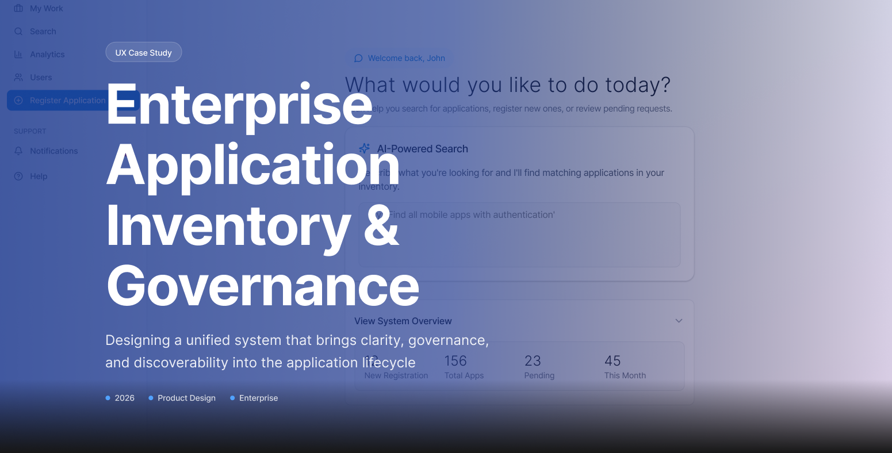

Enterprise Application Inventory is a governance and visibility platform designed to help organisations understand, manage, and make informed decisions about a large and continuously changing application landscape.
Enterprise UX
Application Governance
Portfolio Management
Information Architecture
Decision Support
The initiative addressed a fundamental enterprise problem: when hundreds of applications exist across business units, stakeholders need a reliable way to understand what applications exist, who owns them, how they are used, their lifecycle status, and where governance attention is required. The experience was designed around improving application discoverability, lifecycle visibility, governance, and decision-making across an enterprise application portfolio.
The underlying experience challenge was: How do we turn a fragmented application inventory into a trusted decision-making system?

Project Snapshot
Role
Enterprise UX Lead
Project Type
AI-powered Enterprise Application for Governance and Housekeeping
Focus
Application Portfolio · Governance · Lifecycle Management · Data Visibility · Decision Support
My Contribution
UX Strategy · Research · Information Architecture · Dashboard Design · Data Visualization · Workflow Design · Interaction Design · Prototyping · Design Governance · Stakeholder Alignment
Platform
Microsoft Power BI / Enterprise Application Ecosystem
The Challenge
Large enterprises rarely have a simple application landscape.
Applications evolve through different teams, business units, owners, technologies, and lifecycle stages. As the portfolio grows, the challenge becomes less about knowing that applications exist and more about being able to understand their current state and make confident decisions about them. — while using AI to reduce the administrative effort involved in that journey.
The initiative focused on creating better lifecycle visibility and discoverability across 100+ enterprise applications, while reducing the administrative burden associated with governance and improving stakeholder decision-making.
My Role
I worked across problem framing, UX strategy, information architecture, interaction design, and validation, translating a complex governance requirement into a usable enterprise experience.
I translated those opportunities into an end-to-end experience spanning demand capture, AI-assisted structuring, collaboration, evaluation, prioritization, and progression toward delivery.
Outcome
40%Estimated reduction in approval time ↓
30%Estimated reduction in duplicate tool requests and licensing waste ↓
35%Estimated increase in employee confidence in tool selection ↑
90%Estimated application visibility and governance coverage
Learning
Governance succeeds when it feels supportive, not restrictive. People follow governance they experience as help, not as a gate.
Decision context reduces friction. Showing existing tools, overlap, and cost at the point of decision speeds up approvals and builds reviewer confidence.
Visibility encourages reuse. When employees can see what already exists, they choose it instead of requesting duplicate tools.
Structured workflows build trust. Clear, predictable steps make the process feel fair and transparent to both requesters and approvers.
Information architecture becomes critical at scale. Across hundreds of applications, how information is organised matters more than any single screen.
Complexity should be revealed progressively. Data visualisation works best when it shows what's needed for the decision first, with detail on demand.